外轮廓只留一根粗简断续主线，不回描，不叠线，不做机械描边。
角色设定与水墨视频完成标准
金陵花记
以花照人，以墨入梦
从宣纸上的一笔一染，到人物与花在风中相逢。此页收录角色定形、花境营造、关键帧衔接与四支最终成片。
花有信，人有情，笔墨有余韵
序牡丹开篇
宝钗入境
向下展卷↓宝钗入境
第二卷 · 风格取法三图同参
先定
笔墨气韵
三张参考图共同作为风格母版。它们只负责锁定用笔、材质、色彩、光影与版式，不复制其中人物身份。每次角色生成都同时加载三图，不以单张图或文字想象替代。
衣褶依靠大面积低浓度薄染表现，内部只保留极少必要结构。
浅米白纸面保留纤维与颗粒，人物周围留出足够呼吸空间。
低饱和矿物色与均匀漫射光，不用硬阴影、霓虹色与现代光效。
第三卷 · 角色定形一人三面
正、侧、背
合为一人
三视图是视频中的身份契约。不是单纯展示服装，而是为后续镜头锁定同一张脸、同一发髻、同一配色与同一配件。人物一旦定形，任何镜头都不得随意换脸换装。
面容锁定
脸型、五官比例、眉眼气质在远近景中保持一致。
发髻锁定
发式、花饰、簪钗的数量、位置与轮廓不得漂移。
服饰锁定
内外层次、主辅色、纹样、披帛与裙摆结构连续。
道具锁定
折扇、书卷、酒杯、茶盏的尺寸、握持与状态可追溯。
第四卷 · 图像生成过程人物与花
从设定图
走进花境
每位人物都先经过静态图像阶段。下列四组过程说明人物三视图如何转化为场景图或关键帧；静态图先解决身份、花种、构图与道具，再把已经确认的画面交给视频模型。
.webp) 牡丹花境与人物关键帧
牡丹花境与人物关键帧第一案
薛宝钗 · 牡丹
先以宝钗三视图锁定温婉面容、发髻、杏白衣裙与素面折扇，再把人物放入牡丹花海和亭台山水。静态图先确认人物与花的比例、行走路径和扇子结构。
- 三视图固定人物身份与服装。
- 场景图固定牡丹、亭台、远山和两只玉蝶。
- 关键帧设计“欲扑未扑”的克制姿态。
- 成片只保留一次完整扑蝶动作，并缓拉远收束。
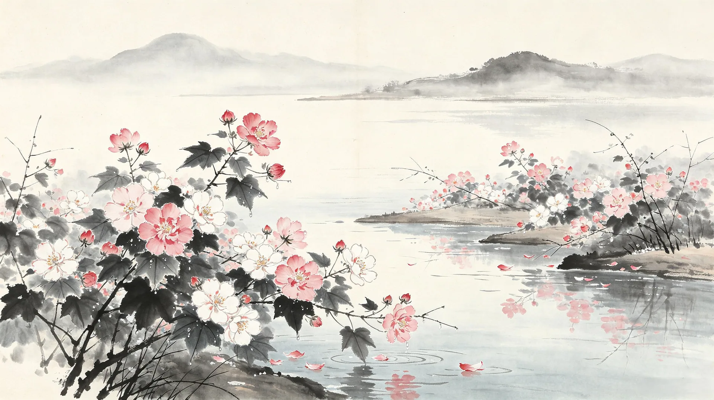
木芙蓉花境底图第二案
林黛玉 · 木芙蓉
从黛玉三视图提取清瘦体态、青绿衣裙与背影轮廓，场景图则固定木芙蓉、雾海、青石和书卷。花瓣虚焦、雾气擦镜与翻起书页承担镜头之间的自然遮挡。
- 三视图锁定清瘦比例与青绿身份色。
- 场景图锁定重瓣木芙蓉和掌状叶片。
- 书卷关键帧分配双手职责，避免手部乱动。
- 以背影、落瓣和雾海完成含蓄收束。
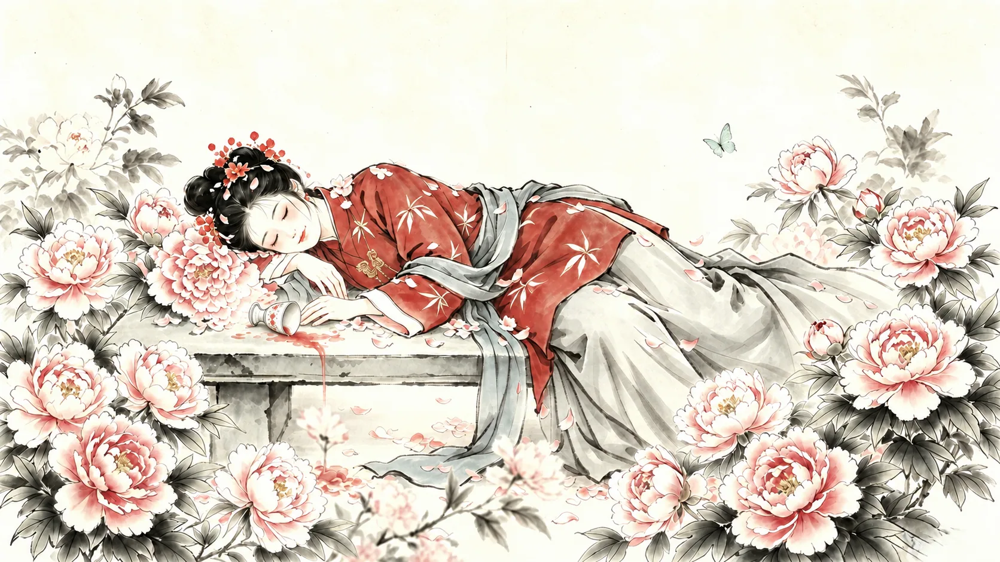
芍药醉卧关键帧第三案
史湘云 · 芍药
三视图先固定红衣、灰蓝披帛与娇憨神态；关键帧再安排芍药花丛、石台和酒杯。酒杯不是装饰，而是有明确初态、受力过程与结果状态的叙事道具。
- 首帧酒杯保持直立，位置与尺寸不变。
- 湘云翻身时，衣袖真实触碰杯身。
- 酒杯顺受力方向倾倒，酒液流出。
- 倒杯状态保持到片尾，绝不自动复原。
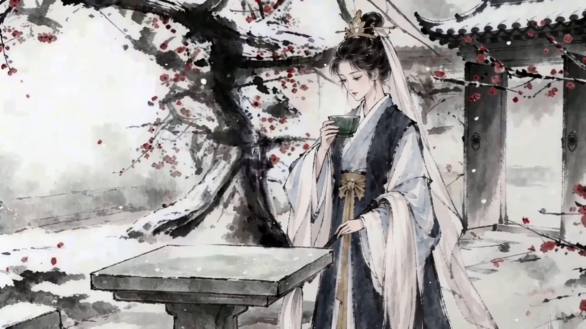
雪后梅园关键帧第四案
妙玉 · 红梅
妙玉放在最后一案。角色设定固定清冷面容、黑白冰蓝层叠衣裙与发饰，关键帧固定老梅、院门、石桌和青瓷杯；人物行走路线与树根、梅枝、石桌始终分离。
- 人物首帧即为实体，不从雾中突然生成。
- 老梅、红梅枝、院门和石桌全程固定。
- 步态逐拍包含抬脚、落地、承重与跟进。
- 停步后垂眸看杯，衣袖与披帛缓慢静止。
第五卷 · 最终完成成片四花四人
花开四境
人物成篇
这里只保留最终完成标准中的四支视频。顺序为宝钗、黛玉、湘云、妙玉。页面不展示任何未完成或中间测试视频；前文出现的过程素材均为静态角色图、场景图与关键帧。
一
二
三
四
先见主花、山水、雾、蝶或枝叶，人物暂不完整出现。
借花枝、雾气、景深、书页或扇面自然进入。
锁定视线、左右手职责、道具高度与空间轴线。
全片只完成一个性格动作，方向、速度与受力清楚。
动作结果与物体状态保持，不复原、不跳变。
镜头缓拉远，人物归于环境，花继续微动。
第七卷 · 独立作品蝶梦红楼
墨韵化蝶，梦落红楼
以一滴墨晕化蝶为引，展开一场诗意凄美的红楼绮梦。水墨氤氲，以蝶为魂、以花为媒、以情为骨。
🦋蝴蝶梦
— 动画设计 · 人物篇 —
故事背景作品以一滴墨韵化蝶为引，展开一场诗意凄美的红楼绮梦。白蝴蝶穿越烟雨书卷，定格林黛玉静读的清冷身影，落英如雨、青石生香。她蹙眉观书，心事被字句轻触，蝶影翩跹而过，引得抬眸凝望，眼底含愁、泪光点点。旁侧木芙蓉含露待放，清寒如霜，衬得住人孤绝温婉。见桃花飘落荡水，她心生怜惜，执锄携囊，缓步走向落花深处，以葬花寄情。全片水墨氤氲，以蝶为魂、以花为媒、以情为骨，勾勒出林黛玉孤高敏感、多愁善感的风姿。
《蝴蝶梦》成片
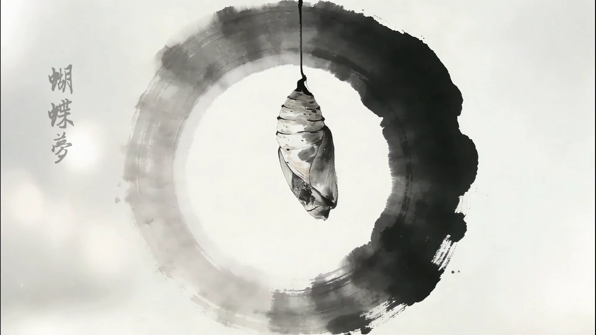
《蝴蝶梦》影片截图
十二帧 · 光影与意境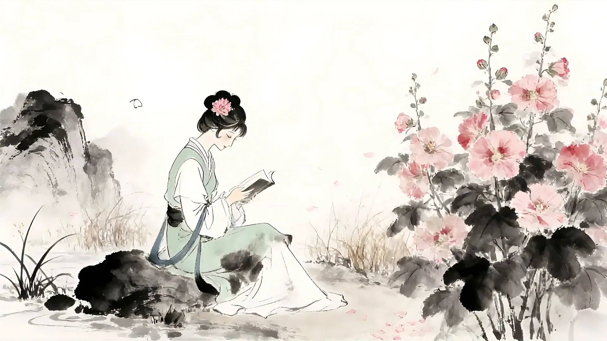
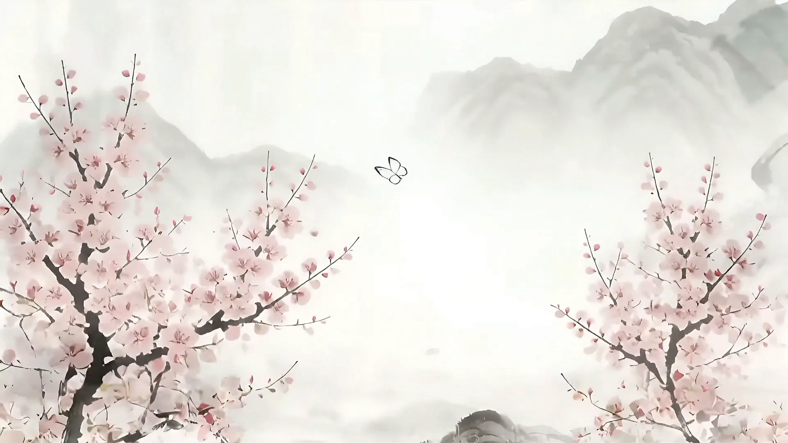
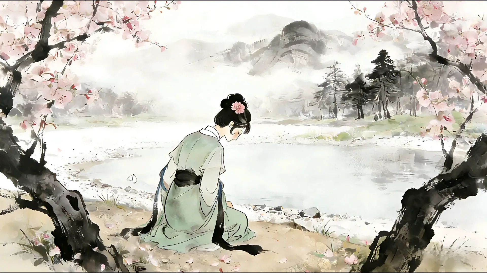
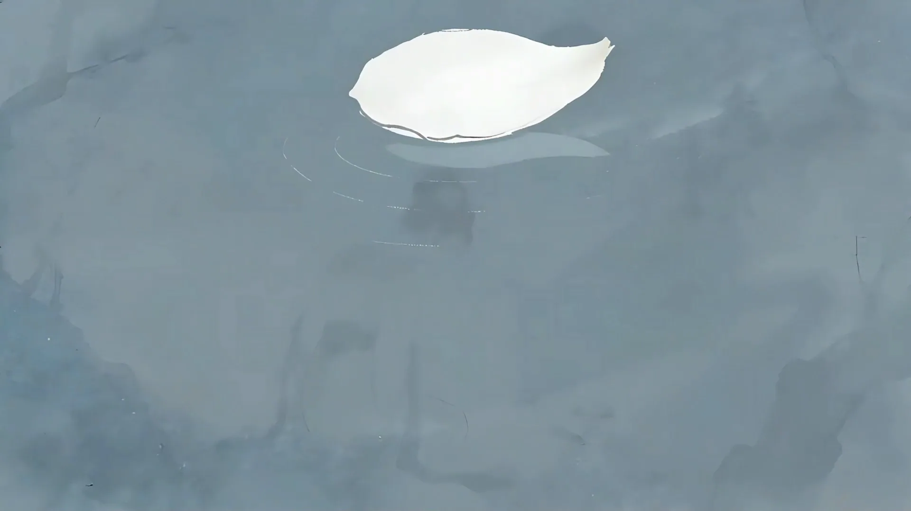
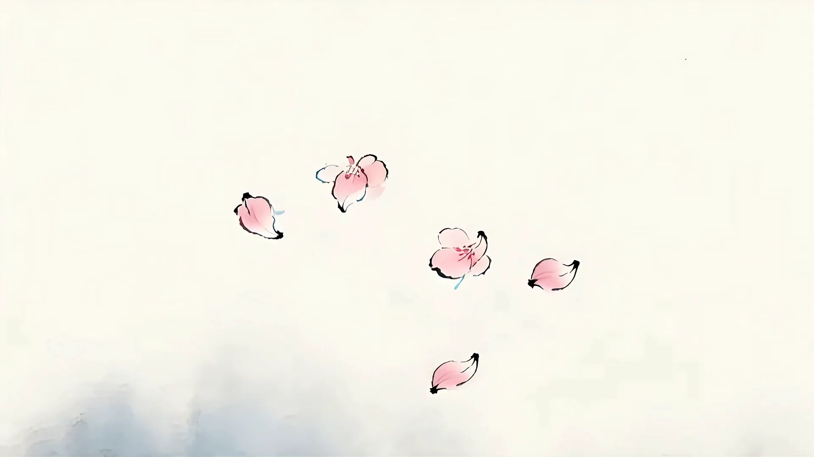
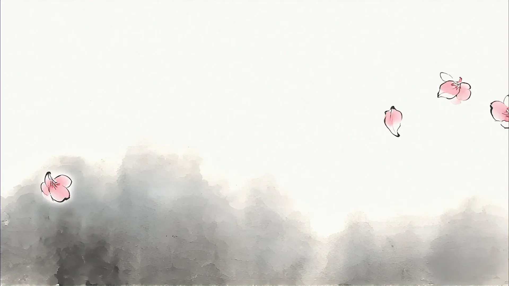
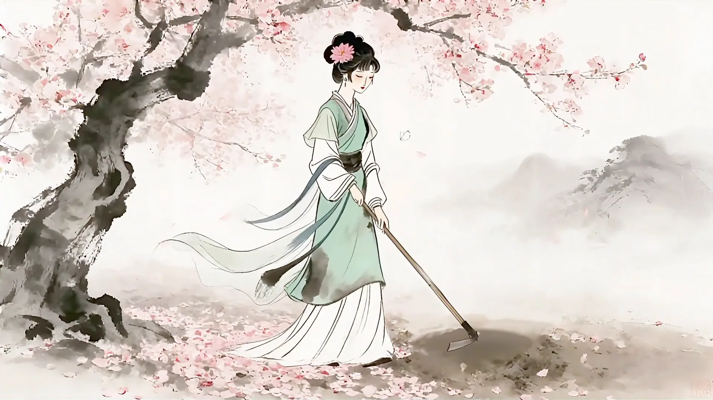
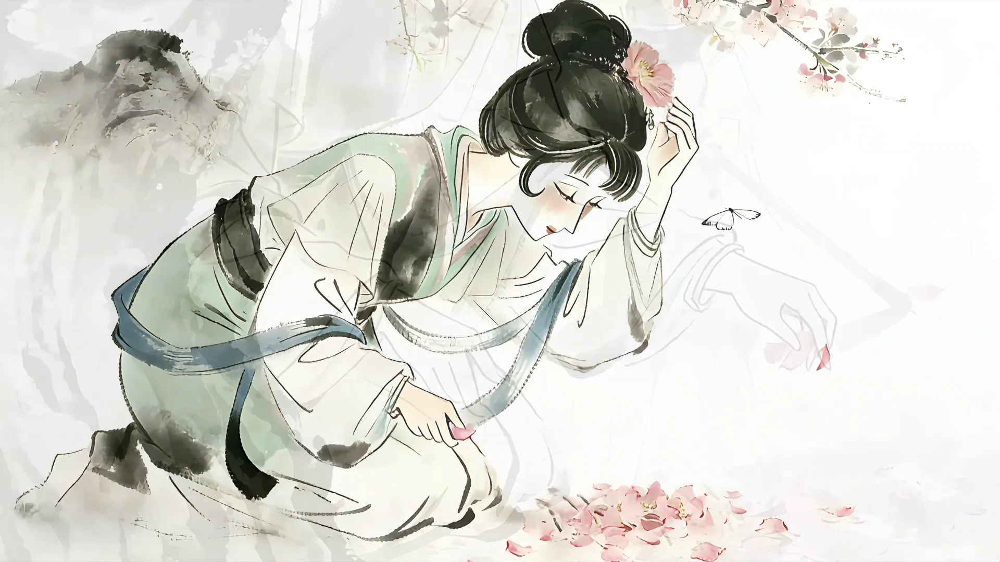
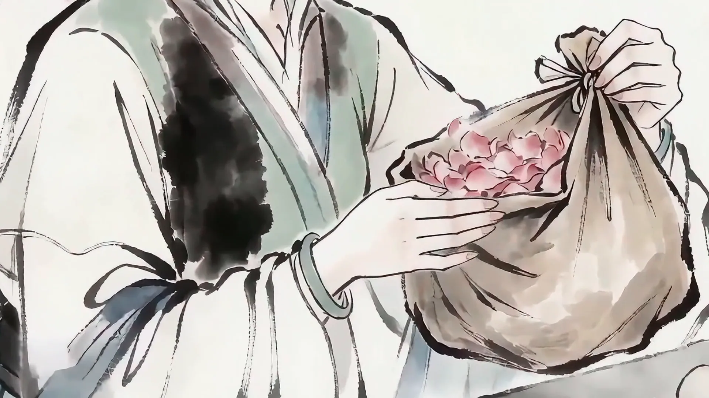
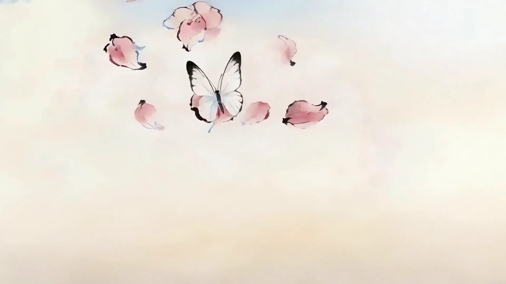
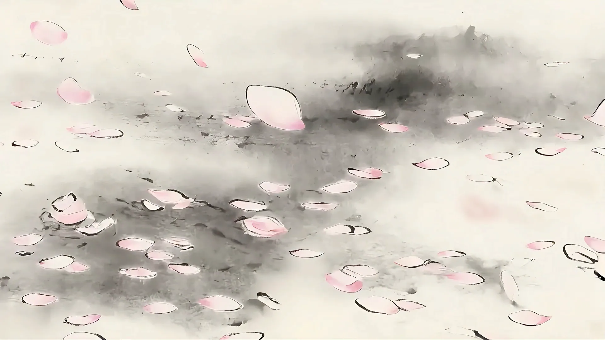
花影留人
一纸风月，四境余香